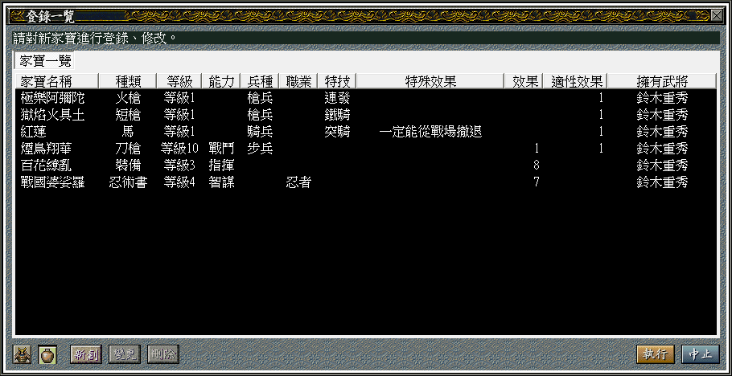

信長之野望烈風傳
Cheat Engine
將 Value Type 改為 Array of byte，取消 Hex 勾選，以空格為區隔，在 Value 輸入武將的「政治」「戰鬥」「智謀」「指揮」，例如武田信玄為 95 95 94 99。
搜尋到資料，用 Memory Viewer 檢視資料，已行動的武將，往上三行可以找到 8x 開頭的資料，按滑鼠右鍵選單的 Add this address to the list，鎖定為 0x，即可保持為未行動的狀態。
能力調整
尼子晴久
尼子晴久不僅將尼子家的版圖擴大到鋪好上京動線，實現了尼子経久為奪取天下所期望的版圖，可說將尼子家帶向最顛峰狀態！而且與只懂得玩陰的毛利元就交手，在吃了悶虧的情況下，照樣制住正值巔峰狀態的毛利家，只可惜在形勢大好之下忽然就病死了～
要不是英年早逝只活 47 歲，毛利家和尼子家誰興誰衰還不知道。（確實不一定會贏，因為毛利家占地利，但確實有得拚。）
以尼子晴久敢進知退、穩如泰山的領導實績，簡直活像尼子経久的最大對手、堪稱那時候戰國霸主的大內義興！這樣精準洞察態勢且立馬做好對策的人物，數值竟然是政治 61、戦闘 58、采配 60、智謀 28，一個活生生跟毛利元就（96、65、93、100）交過手，且打得不相上下的人物，這實在被低估了。
《信長之野望：天道》的數值比較合乎尼子晴久的表現：83、59、75、76。附帶一提，山中幸盛：16、85、76、67，本城常光：10、82、76、41。
歷史事件大全
這是寫在登錄檔，而不是存檔，因此換台電腦就要重新來過，無法隨遊戲轉移。
不妨自己寫個登錄檔全解開吧：
參考資料
這是我每次重玩「烈風傳」時要用到的筆記，與攻略、甚至遊戲內容無關～
人名修正
島村貫阿彌；盛實。
鈴木佐大夫；重意。
百地三太夫；丹波、泰光。
竹中半兵衛；重治。
山中鹿之介；幸盛。
黑田官兵衛；孝高。
母里太兵衛；友信。
石川五右衛門。
後藤又兵衛；基次。
渡邊勘兵衛；了。
御宿勘兵衛；政友。
森蘭丸；成利。
高田又兵衛；吉次。
荒木又右衛門；保知。
佐佐木小次郎；巖流。
真田大助；幸昌。
名古屋山三郎。
氏家卜全；直元。
稲葉一鐵；良通。
真田幸村；信繁。
前田慶次；利益。
可兒才藏；吉長。
小野木重次；重勝。
初鹿野昌次；信昌。
服部半藏：正成。
高阪昌信：春日虎綱。
鬼小島彌太郎：小島貞興。
立花道雪：戸次鑑連。
原田直政：塙直政。
山浦國清：村上國清。
風魔小太郎：（風間虎策）。
織田信長子嗣
長男：織田信正。（村井貞勝養子）【未登錄】
次男：織田信忠。（信長正室濃姬的養子，因此成為嫡長子。）
三男：織田信雄；北田具豐。（北田具房養子）
四男：織田信孝；神戶信孝。（神戶具盛養子，其實比信雄早出生廿天。）
五男：織田信房；津田勝長。（武田家人質，與信忠一起死於本能寺之變。）【未登錄】
六男：織田秀勝；羽柴秀勝。（羽柴秀吉養子）
七男：織田信秀；與祖父同名。
八男：織田信高。【未登錄】
九男：織田信吉。【未登錄】
十男：織田信貞。【未登錄】
十一男：織田信好。【未登錄】
十二男：織田長次。【未登錄】
鈴木重意
長男：鈴木重兼。【未登錄】
次男：鈴木重秀。
三男：鈴木重朝。
鈴木重次；鈴木重朝長子，任雜賀孫市。
鈴木重秀新家寶

戰國武將的名數
更多詳細資料，可參考日文維基百科的《戦国武将の名数》條目。
三好三人衆
三好長逸
三好政康
岩成友通
武田四天王（信虎）
阪垣信方
甘利虎泰
飯富虎昌
小山田昌辰
武田四名臣
馬場信春
內藤昌豊
山縣昌景
春日虎綱
三彈正
高阪昌信（逃げ弾正）
保科正俊（槍弾正）
真田幸隆（攻め弾正）
美濃三人衆
稻葉良通
安藤守就
氏家直元
淺井三將
海北綱親
赤尾清綱
雨森清貞
龍造寺四天王
江里口信常
成松信勝（升職後由「圓城寺信胤」替補）
百武賢兼
木下昌直
立花四天王
由布惟信
十時連貞
安東家忠（退隱後由「小野鎮幸」替補）
高野惟榮
立花雙璧
由布惟信
小野鎮幸
織田四天王（織田五大將）
柴田勝家
丹羽長秀
瀧川一益
明智光秀
羽柴秀吉
羽柴四天王（秀吉）
宮田光次
神子田正治
尾藤知宣
戶田勝隆
府中三人眾
不破光治
佐佐成政
前田利家
賤岳七本槍
福島正則
加藤清正
加藤嘉明
脇阪安治
平野長泰
糟屋武則
片桐且元
豐臣四天王（秀賴）
真田幸村
後藤基次
木村重成
長宗我部盛親
PlayStation 版《諸王の戦い》的「古武将」（不含三國志人物）
北宋前
| -100~-44 尤略斯．凱薩 | Julius Caesar，羅馬帝國奠基者。 |
| ???~573 高長恭 | 北齊名將，又稱蘭陵王。 |
| 624~705 武則天 | 中國唯一女皇帝。 |
| 921~1005 安倍晴明 | 平安時代的陰陽師。 |
| ????~???? 藤原秀鄉 | 平安時代的武將。 |
| 1043~1099 席德 | 本名 Rodrigo Diaz，翹勇善戰被尊稱為蓋世雄主的 El Cid。 |
| 1021~1086 王安石 | 幫助宋神宗變法圖強的宰相，但因此黨爭反而加速北宋的滅亡。 |
| 1103~1141 岳飛 | 北宋抗金名將。 |
成吉思汗
| 1138~1215 北條時政 | 賴朝的岳父，支援源氏討伐平氏。 |
| 1147~1199 源頼朝 | 日本鎌倉幕府首任征夷大將軍。 |
| ????~1189 武藏坊弁慶 | 平安時代末期的僧兵，後來成為源義經的隨從。 |
| 1159~1189 源義經 | 賴朝的弟弟，日本第一戰神。 |
| 1162~1227 鐵木真 | 統一蒙古創立帝國的成吉思汗。 |
| 1163~1561 北條義時 | 鎌倉幕府第二代執權。 |
| 1164~1205 田山重忠 | 鎌倉名將，有「阪東武士之鑑」的美譽。 |
| 1169~???? 那須與一 | 在源平合戰以神乎其技的弓術名留後世。 |
| 1183~1242 北條泰時 | 鎌倉幕府第三代執權。 |
| 1186~1241 窩闊台 | 蒙古帝國第二任可汗。 |
| 1192~1231 完顏良佐 | 金國名將，大昌原之役以四百騎擊退蒙古軍。 |
| 1197~1216 約翰．欠地王 | 獅心王理查的繼任者，但沒有領地，被戲稱 John Lackland。 |
| ????~1279 張世傑 | 宋末三傑。 |
| 1190~1244 耶律楚材 | 蒙古帝國中書令，相當於宰相。 |
| 1215~1294 忽必烈 | 元朝開國皇帝。 |
| 1231~1316 郭守敬 | 元朝天文學家。 |
| 1236~1279 陸秀夫 | 宋末三傑。 |
| 1236~1282 文天祥 | 宋末三傑。 |
| 1246~???? 竹崎季長 | 鎌倉幕府武將，與元軍作戰聞名。 |
| 1251~1284 北條時宗 | 鎌倉幕府第八代執權。 |
| 1254~1324 馬可波羅 | 以《馬可波羅遊記》聞名。 |
| 1261~1300 羅賓漢 | 俠盜羅賓漢。 |
| ????~1300 陳興道 | 越南陳朝名將。 |
| 1274~1279 趙昺 | 宋朝滅國皇帝。 |
大明
| ????~1336 楠木正成 | 南朝武將，後醍醐天皇的武將。 |
| 1301~1338 新田義貞 | 源氏末裔，鎌倉幕府的武將。 |
| 1305~1351 足利尊氏 | 室町幕府初代將軍。 |
| 1328~1398 朱元璋 | 明朝開國皇帝。 |
| 1335~1408 李成桂 | 李氏朝鮮創始者 |
| 1358~1408 足利義滿 | 室町幕府第三代將軍。 |
| 1371~1434 鄭和 | 水軍 S 級！ |
| 1394~1481 一休宗純 | 一休和尚。 |
| 1412~1431 貞．德 | 聖女貞德。 |
| ????~1448 蜷川親當 | 連歌師智蘊。 |
| 1430~1476 弗拉德．采佩什 | 吸血鬼公爵的原型。 |
非 PlayStation 版《諸王の戦い》的武將
日本戰國
| 1454~1546 龍造寺家兼 | 信長之野望系列最老的人。 |
| 1458~1541 尼子經久 | 日本「下剋上」始作傭者。 |
| 1467~1557 志道廣良 | 協助毛利元就平定謀反勢力。 |
| 1471~1485 長尾為景 | 上杉謙信的父親。 |
| 1475~1539 一條房家 | 撫養長宗我部家四歲遺孤國親，助其成年後奪回岡豐城。 |
| 1477~1529 大內義興 | 領北九州勢力從周防上洛的大名，尼子經久的勁敵。 |
| 1486~1550 井上元兼 | 毛利家弄臣，最後終於遭到肅清的報應。 |
| ????-1524 相合元綱 | 毛利元就之弟，尼子經久施計分化他任家督，謀逆失敗身亡。 |
| ????~1524 阪廣秀 | 毛利家要臣，擁立相合元綱繼任家督而被肅清。 |
| ????~1524 渡邊勝 | 毛利家戰神，被井上元兼誣陷參與謀逆事件加以誅殺。 |
| ????~1524 桂廣澄 | 毛利家臣，因堂兄弟阪廣秀謀逆，自責切腹自盡。 |
| 1511~1535 松平清康 | 德川家康祖父，統一三河的五年後被家臣暗殺，年僅廿五歲。 |
| 1473~1551 大村純前 | 烈風傳最早出生的武將；已登錄。 |